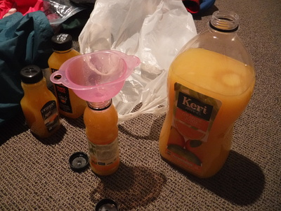
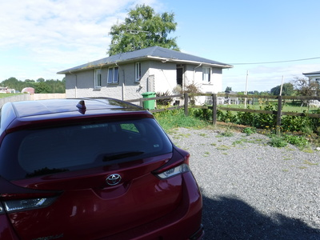
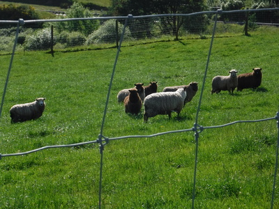
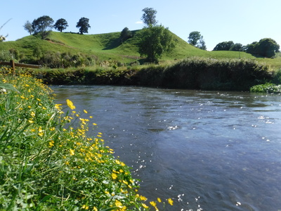
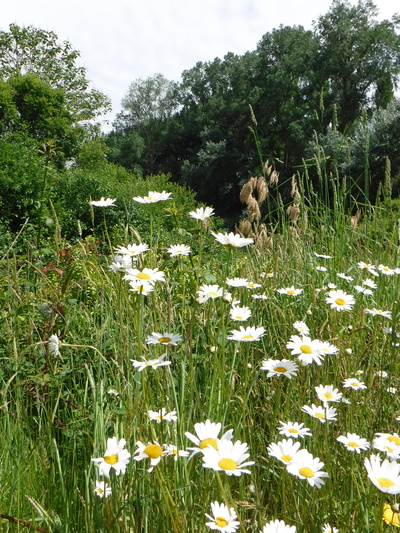
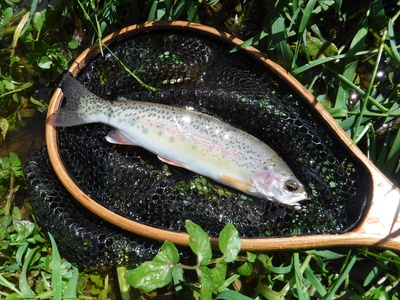
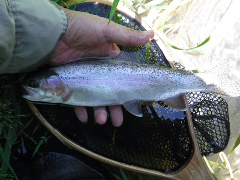

釣行日誌 ＮＺ編 「一期一会の旅：A Sentimental Journey」
スプリングクリークのレインボーたちと戯れる
11/29(THU)-1
今朝は早起き。６時半に起きた。さっそく自分で支度して朝食を済ませ、またまた大瓶のオレンジジュースを小分けしてペットボトル３本に詰める。

はやる心を抑えつつカローラに釣り具一式を積み込み、今日の行き先をメモに残して大林さん宅を出発する。目的の農家に着いたのは９時。ここは一昨日釣った本流に流れ込む右岸側の支流に１番近い牧場である。

小さな住宅の玄関をノックすると、まだパジャマ姿の奥さんが出て来てくれた。いささか恐縮したが、無礼を謝りつつお願いすると、牧場への立ち入りを快諾してくれた。お礼に昨年、富士山方面への旅行で買った絵葉書１枚をささやかながらプレゼントすると喜んでくれた。フジヤマの写真なら誰が見ても日本と判るだろう。まぁニュージーランドのタラナキ山は富士山によく似ているけれども。
車は庭に停めておいて良いとのことだったので、トランクを空けて釣り支度を始める。
数え切れないほど通ったこのスプリングクリークも、国道のすぐ下になるこの区間は、これまで１度も釣ったことが無い。とりあえず入渓しやすそうな橋のたもとを目指して牧草地を歩み下っていく。近年では羊よりも牛の牧場の方が増えているそうだが、ここでは茶と白色の羊たちが出迎えてくれた。巨躯の牛よりも気は楽である。

いざ岸辺に着いてみると、この川は湧き水の流れではあるのだけれど、一般的にイメージされるスプリングクリークよりもかなり流速があり、ポイントが絞りきれない。流れは速く重く深く、ウェーディングしながらの釣り上がりはよほどの体力と根性が無いと無理っぽかった。（笑）

かといって、岸上からのフライフィッシングでは至る所に生えている灌木の繁みでキャスティングの範囲が限られてしまう。やはりお気楽なスピンフィッシングが正解であろう。と逃げを打つ。
天気は快晴、岸辺にはマーガレットの白い花やバターカップの黄色い健気な花が咲き乱れ、のどかな風景が広がる。一昨日の下流部よりも水は綺麗だった。

一昨日と同じく50mmのファスト・シンキングミノーのなるべくナチュラルなカラーを選んで結び、対岸へと放り込む。数メートル流して沈ませてから、ほとんどリーリングはせずに、ミノーが水流で泳ぐままにして扇形に広範囲を探る。時折アクションを付けると、それっとばかりに30cmクラスが飛びついてきた。今日の１尾目だ。

川の中には水草の島が出来ていたり、藻の背後に淀みがあったり、一見何の変哲も無い単調な流れだが、それなりに鱒の潜んでいるポイントが見え隠れしている。水が青黒くなって見える深みにルアーを通してくると、なにがしかの反応があって、たいていは30cmクラスのレインボーのコツンというストライクとその直後のジャンプでフックが外される。おおよそ４尾に１尾くらいしかキャッチまで持ち込めない。サイズは小さいとは言え、実に悔しい。

サウス・ウェストランドのブラウンにはあまりにも小さすぎて、ロッジに置いてけぼりだったランディングネットだが、このスプリングクリークでは重宝した。ネットがゴム製なので、シングルフックに替えたこともあり、絡まりが激減してずいぶんと楽になった。
釣行日誌ＮＺ編 目次へ
サイトマップ
ホームへ
お問い合わせ